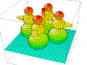
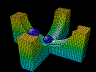
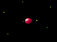
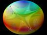

"Memorial" by Kristen Morgan.

"Taj" by Kristen Morgan.
| DPGraph News |
| Home | Buy | Free Viewer | Legacy Site Licensees Latest news: 12 Nov 2017 | Update to newest version: 19 Dec 2016 Math Art Gallery | Documentation | Links | Privacy | Contact |
You can click on the thumbnail pictures to view and manipulate the graphs after you have downloaded and installed either the full version of DPGraph or the free DPGraph Viewer. If your version of DPGraph or the DPGraph Viewer can't display a graph then you may need to update to the most recent version. To view the commands that created the graphs, click on Edit inside DPGraph or the Viewer. Some versions of Netscape require you to stop and restart your browser after installing.
"Sun" (movie) by Tristan Chandler. There is a spouting whale next to the offshore rocks. |
12 Nov 2017: Awesome new graph from Tristan Chandler in the gallery! Look carefully, and you'll see a spouting whale next to the offshore rocks.
"Memorial" by Kristen Morgan. |
"Taj" by Kristen Morgan. |
3 June 2017: Two amazing new graphs from Kristen Morgan in the gallery! Stunning examples of math and graphing.
19 Dec 2016: Fixed installation failure on Windows 8.1 OEM version.
5 Sept 2013: Adjusted scaling so that spheres should be spherical on all displays.
4 Jul 2008: Added min(x,y) and max(x,y) functions. The functions take two values and return the minimum or maximum value.
23 Apr 2008: Put in a workaround for a bug in some keyboard drivers which caused graphs to continue moving after the arrow keys were released.
16 Feb 2008: Flaming Thunder, at www.flamingthunder.com, has acquired the exclusive right to use DPGraph's dynamic 3D technology in their symbolic/numeric computer programming language. For a limited time you can get DPGraph free with Flaming Thunder, or vice-versa.
11 Feb 2008: Fixed a problem with long file names that, under rare circumstances, caused the DPGraph installer to halt with an error code of C3C66941 000000CE.
26 Jan 2008: Implemented a work-around for a Windows Vista bug that caused DPGraph to crash when using the scrollbar. For the benefit of other developers who might run into a similar Vista bug, the SetScrollPos function erroneously sets the last error to Error_Call_Not_Implemented (120 decimal, 78 hexadecimal) when it returns a previous scroll position of 0 -- even if you zero the last error by calling SetLastError before SetScrollPos.
18 Oct 2004: For the benefit of Derive users, DPGraph now accepts [ and ] as equivalent to ( and ).
22 Aug 2004: For the benefit of Derive users, DPGraph now accepts #e in addition to e for 2.71828..., the base of natural logarithms.
|  "Dance" (movie) by Katarzyna Dymek-Nowak. |
11 Dec 2003: Fun new graph from Katarzyna Dymek-Nowak in the gallery! Enjoy the dancing mathematical women.
18 Nov 2003: A new update for DPGraph is available. As usual, all DPGraph licensees can update for free. DPGraph now installs under limited accounts on Windows XP. Also, this update prevents DPGraph from crashing when buggy memory-resident third-party programs leave floating-point interrupts enabled.
"Breathing Box" (movie) by Allister Steele. |
"Dance of the Six Faces" (movie) by Allister Steele. |
"Folding Space" (movie) by Allister Steele. |
 "Be Still My Beating Box" (movie) by Allister Steele. |
2 Oct 2003: Four wonderful graphs from Allister Steele in the gallery! Variations on a theme that move in harmony with each other.
 "Cinquefoil" (movie) by C. P. Price. |
 "Cinquefoil" by C. P. Price. Very high resolution, may take many seconds to display. |
30 Sept 2003: Two great new graphs from C. P. Price in the gallery! Knot-like graphs are usually created using parametric equations, but if you click on Edit in DPGraph you'll see that these are generated by implicit equations (which is one reason for the slight break at critical values in the graph).
"Coquillage Volant" (movie) by Jean Maillet. |
29 Sept 2003: Beautiful new graph from Jean Maillet in the gallery! Not only is the shell fascinating to watch, but if you click on Edit inside DPGraph you'll see it's also a nice example of how to use spherical coordinates.
28 Sept 2003: Yet more cool graphs from Stijn Hertelé in the gallery! He made "Love", the beautiful heart with the E and S, for his love Eline. Ken Van Avermaet helped with the neat rotating half-sphere with bouncing balls. "Special 2" has a lot of detail that you can see much better in DPGraph.
 "Love" by Stijn Hertelé. Made for his love Eline. High resolution, may take several seconds to display. |
"Sphere With Holes" by Stijn Hertelé. Very high resolution, may take many seconds to display. |
 "Flubber Rond Kern" (movie) by Stijn Hertelé. |
 "Hypnotise" (movie) by Stijn Hertelé. |
"Physics 2" (movie) by Stijn Hertelé. |
 "Physics 5" (movie) by Stijn Hertelé. |
 "Physics 7" (movie) by Stijn Hertelé and Ken Van Avermaet. |
 "Rotation 6" (movie) by Stijn Hertelé. |
 "Special 2" by Stijn Hertelé. |
 "Diamant 2" by Stijn Hertelé. |
 "Cliff" by Stijn Hertelé. Use the Scrollbar in DPGraph to vary A, the number of cliffs. |
"Linux" by Ken Van Avermaet. Very high resolution, may take many seconds to display. |
"Vliegtuig Red Baron" by Ken Van Avermaet. Very high resolution, may take many seconds to display. |
 "Vliegtuig F15B" by Ken Van Avermaet. Very high resolution, may take many seconds to display. |
"Boot" by Ken Van Avermaet. Very high resolution, may take many seconds to display. |
28 Sept 2003: Even more fantastic graphs from Ken Van Avermaet in the gallery! These masterpieces are amazing; it is easy to see that creating the equations for these graphs took a lot of time and effort.
22 Sept 2003: Even more really cool graphs from Stijn Hertelé in the gallery! Great use of everything from transparency to time-dependent equations, including a trick in "8vlak" using graph3d.resolution:=3.
"Atomium2" by Stijn Hertelé. Very high resolution, may take many seconds to display. |
"Anarchy" by Stijn Hertelé. Very high resolution, may take many seconds to display. |
 "Abstractie" by Stijn Hertelé. Very high resolution, may take many seconds to display. |
 "Aantrekkingafstoting" (movie) by Stijn Hertelé. |
 "Knikker" by Stijn Hertelé. Very high resolution, may take many seconds to display. |
Links and pages mentioned in these older news items may have disappeared.
18 Sept 2003: Fantastic new graphs from Ken Van Avermaet in the gallery! There are at least two features of these great graphs that the thumbnails don't adequately capture: there aren't enough frames in the animation of the orbiting graph to see the precession of the earth around the sun (which is why the animation seems to "skip" at one point), and the cute alien face is much easier to see full screen than in the thumbnail.
16 Sept 2003: More really cool graphs from Stijn Hertelé in the gallery! The variety is amazing: a guitar, a space shuttle, a yin yang symbol, automobile pistons, an "omwenteling wirwar", and a beautiful shimmering "kwal" (which we kept running on one of our computer screens).
12 Sept 2003: Creative new graphs by Stijn Hertelé in the gallery! Everything from an atom on up to a planetary system.
8 May 2003: Awesome new graphs by C. P. Price in the gallery! These graphs show how truly beautiful and artistic math can be.
8 May 2003: Fun new graph by Anna Leśniak in the gallery! Click on Edit inside DPGraph to see how the tank was created using several 3D implicit inequalities.
5 December 2002: Beautiful and handy new graphs by Yehia Muhsen in the gallery! The beautiful wave speaks for itself, and "Sphere With Axes" illustrates a clever way of including axes in implicit graphs by drawing zero diameter tubes.
1 August 2002: Great new graph by Thomas Leisner in the gallery! It shows an oscillating droplet in a Paul trap -- a device that uses oscillating electric fields to store charged particles in a limited volume.
29 July 2002: Many, many, many thanks to Laurent Hivon for providing French translations of some of the DPGraph documention! The files are in pdf format and provide French versions of the DPGraph Online Help and the DPGraph Parametric Graphing Examples. There are links to his files in the Documentation and in the Links
28 July 2002: Wonderful new graph by Bob Rutkiewicz in the gallery! Even though it looks like biological cell division, this graph is an interpretation of a manifold from Physics String Theory/M-Theory. The full equation is a 10-brane, but this graph shows a 2D cross section of a 5-brane equation, which is useful because the number of holes in the 5-brane is the same as in the 10-brane.
22 July 2002: Fun new graph by Brandon Enright in the gallery! Watch the worm swim on your screen as it gradually changes direction.
17 July 2002: Lots of cool new graphs by Joe Seale in the gallery! They illustrate how to visualize shear tensors and understand their shapes, symmetries, and orientations in space. Each file has explanatory comments at the top; click on Edit inside DPGraph to view them.
26 March 2002: Two wonderful new graphs by Anna Leśniak in the gallery! These are the first examples I have seen of using DPGraph to display mathematically generated text. Anna Leśniak, who is not yet 15, graphed the name of her school!
11 March 2002: Another new book in German by Rainer Wonisch featuring DPGraph! Animationen mit Derive und DPGraph in Mathematik und Physik is available from shop.bk-teachware.com. It comes bundled with the DPGraph Viewer and many examples. Search for Wonisch from their home page to find all of his books!
9 November 2001: New version of DPGraph! Users can update for free. This version works around a bug in Windows XP that caused earlier versions of DPGraph to crash.
25 September 2001: New version of DPGraph! If you already are licensed to use DPGraph, you can update for free. The commands in DPGraph files can now extend over more than one line. There must be an opening parenthesis on the first line of the command, and a closing parenthesis on the last line. For example, the command
GRAPH3D( (X^2+Y^2+Z^2=9,SIN(X)+SIN(Y)=SIN(Z)) )
can now be written as
GRAPH3D( (X^2+Y^2+Z^2=9,
SIN(X)+SIN(Y)=SIN(Z)) )
This version also fixes some minor bugs. You can now use exponential notation for numbers (e.g. 1.856E3). Also, selecting 'By expression' on the Color menu doesn't cause crashes when displaying parametric graphs.
11 July 2001: Fascinating new graph from Jim Swift in the gallery! For a great explanation of minimal surfaces, and of soap films and why they pop, visit Jim Swift's Soap Film page.
25 June 2001: Wonderful new graph from Brent Solly in the gallery! Watch people go over, and cars go under, the two hyperbolic paraboloids.
9 June 2001: Amazing new graph from Jim Swift in the gallery! Not only does it clearly illustrate how a cycloid curve is generated, but it also serves as mesmerizing art. Don't miss Jim Swift's Cycloid page, and especially don't miss his cool graph with A = 2.
5 June 2001: Fun new graph from Jim Swift in the gallery! This graph is probably very familiar to anyone who has, or was, a toddler. I highly recommend Jim Swift's fascinating Donut Toy page, which demonstrates mathematical modeling without requiring calculus: how to use the floor function and a quadratic function to model the colors.
31 May 2001: Two cool new graphs from Bronek Pabich in the gallery! The tetrahedron illustrates a clever use of an expression to color the surface of the tetrahedron, and the movie illustrates how to form a nonconvex octahedron from eight planes.
30 May 2001: Beautiful new graph from Jim Swift in the gallery! Don't miss the clear explanation and many, many other beautiful examples on Jim Swift's page on Spherical Harmonics.
25 May 2001: Two new minimal geometry graphs from Alan Schoen in the gallery! I highly recommend reading the comments and references inside "Pseudo I-WP", and I also highly recommend following the "More ..." link to see lots of pictures of triply periodic minimal surfaces created by Ken Brakke with his Surface Evolver.
23 May 2001: More neat graphs from Bronek Pabich and Jim Swift in the gallery! These graphs include a dynamic demonstration of how to assemble a stellated octahedron from eight triangles, how to create a Mobius strip using the new parametric graphing capabilities, and how to effectively use transparency to show all of the edges of an octahedron.
22 May 2001: Another cool new graph from Jim Swift in the gallery! Plus, this graph demonstrates a new feature of the gallery: if you submit a graph you can also submit links to your home page or other related materials.
12 May 2001: Added examples of torus knots and dynamic realtime rollercoasters to the documentation on parametric curves and surfaces and to the samples that come with DPGraph and the DPGraph Viewer (click here to go to the free update page).
11 May 2001: More cool graphs from Jim Swift in the gallery! These graphs use transparency so that you can see the all of the faces, edges, and intersections.
10 May 2001: Fixed a bug that caused time-dependent parametric graphs to gradually eat up memory. Updating to the latest version will cure the problem.
8 May 2001: Great new graph from Jim Swift in the gallery! This graph, and many of his other wonderful graphs, can be found on his page at MAT 137, Calculus II (which is also listed on the links page).
7 May 2001: New book in German by Rainer Wonisch featuring DPGraph! Funktionen zweier Variablen untersuchen mit Derive und DPGraph - Ein Unterrichtsgang unterstützt von motivierender Grafik is available from shop.bk-teachware.com. Search for Wonisch from their home page!
7 May 2001: Great new link from Jim Swift! View some of the examples he uses for his MAT 137, Calculus II course. Be sure to check out the "Twilight Zone" and the beautiful helices/helixes, which were created using implicit equations.
6 May 2001: Cool new graph from Travis Casper in the gallery! The actual graph flaps too quickly to capture in the slowed down .gif animation, and it breathes, too! View it using DPGraph or the DPGraph Viewer to get the full (and amazingly realistic) effect.
6 May 2001: New free update to DPGraph! DPGraph now supports 2D to 5D parametric curves and surfaces in rectangular, polar, cylindrical, and spherical coordinates. DPGraph also now has ceiling and floor functions. There is more information in the documentation.
22 January 2001: New free update to DPGraph! Fixed the documentation to mention both ASCII and binary DPG files. Added more user contributed graphs, including a new folder called Optimal Geometry.
2 January 2001: New free update to DPGraph! Added support for binary DPG files, which are smaller than ASCII DPG files. Also released the free DPGraph Viewer, which can read binary DPG files.
12 December 2000: New free update to DPGraph! Changed the opening screen, changed the name from DPGraph 2000 to DPGraph, and unified the Linux and Windows versions into a single executable file.
26 November 2000: New free update to DPGraph! Fixed a bug that caused some vector fields to be displayed incorrectly when used in lists.
25 November 2000: Lots of new graphs today, starting with two beautiful and fascinating graphs from Katherine Brandl! These are images of the symplectic leaves associated with a Poisson bracket, used to describe the primitive spectra of certain algebras. The first graph is a flower created by combining several instants of the moving graph.
And next is a collection of 32 wonderful new graphs from Rainer Wonisch! There are graphs of planets, chaos, interference, and even magic carpets. These graphs are examples of how to use mathematical expressions to color surfaces.
7 November 2000: Two incredibly useful new graphs from Tom Tredon! These graphs are actually calculus lesson plans; if you click on Edit inside DPGraph you'll see that Prof. Tredon has included instructions for exploring the definitions of 2D and 3D derivatives. He has also graciously included his email address in these files in case you would like to contact him about these graphs!
31 October 2000: Happy Halloween from Hassan Sedaghat! There is no sound to go along with this talking pumpkin head, but I think that would be a fun new feature to add to DPGraph -- it's now on my list-of-things-to-do.
23 October 2000: New and wonderful graphs from Tom Tredon! In addition to being fun to play with, these graphs are really great illustrations of 2D and 3D vector fluid flow. Be sure to click on Edit inside DPGraph to see more infomation, including explanations for the settings for some of DPGraph's parameters.
7 October 2000: You can now use mathematical expressions to specify the colors of surfaces and vectors: if you already have DPGraph, then get your free update here. DPGraph can now display up to 8D graphs: 3D arrays of time-dependent 3D vectors, using color to encode another dimension of information (momentum, for example). For example, here is what you could type into a DPG file (by clicking on Edit inside DPGraph) to specify the color of a surface:
graph3d.color :=
sin(x)*sin(y)*sin(z)
and here is what you could type to specify the color of vectors:
graph3d.vectorcolor :=
sin(x)*sin(y)*sin(z)
You can even make the color vary with time. For example:
graph3d.color := (x+time)/6
To convert the expression to a color, DPGraph uses only the fractional part of the expression when evaluated at the current x, y, z, and time coordinates. This results in values that range from 0 to 1. These values are then mapped onto a color wheel that ranges from red at 0, through magenta, blue, cyan, green, yellow, and finally back to red again at 1.
12 September 2000: Beautiful new dynamic graph from Tom Tredon! Multiple interfering waves combine in fascinating patterns. You can use the Scrollbar inside DPGraph to vary A (the speed) and B (the whole graph's amplitude).
13 August 2000: Found and fixed a bug in the Linux version that caused status information to be displayed in the middle of the main window, instead of at the bottom of the main window.
10 August 2000: The first Linux version is out! There will be many changes and updates coming in the following days and weeks -- please let us know if you run into any problems. If your institution has a DPGraph site license, you can download the Linux version here. For the next few days while I am finishing the automatic updating program, if you have an individual copy of the Windows version and would like a copy of the Linux version, please email us at support@dpgraph.com.
31 July 2000: Cool new graph! Brian Tenneson used Groebner bases in Mathematica to convert the parametric form of Enneper's surface to implicit form, then used DPGraph to display the resulting equation.
17 July 2000: New free update available! It fixes a bug under older releases of Windows 95 that caused the OPEN and SAVE menu items to not work. Plus, I think the first release of the Linux version will be out within a week!
12 June 2000: More really amazing optimal geometry graphs from Carlos César de Araújo in the gallery, including references and historical information! Click on Edit after you enter DPGraph to see the reference information. The first of the beautiful graphs is a gyroid, and the other two are one period, and three periods, of Schwarz's P surface.
6 June 2000: There are three wonderful new graphs from Carlos César de Araújo in the gallery! All three relate to optimal geometry. The first graph is a catenoid. The other two graphs are of Scherk's minimal surface: a multiperiodic version, and a transparent single period.
30 May 2000: More cool graphs in the gallery! Martin Levenius has created a neat graph that draws the sphere determined by four space points. Michael Parker has created a delicious iced donut, followed by a near-miss basketball shot.
25 May 2000: Another great new graph in the gallery, and more great new links! Daniel Bentham and Staffan Björkenstam have created an incredible ethane molecule that allows you to use the A and C variables on the Scrollbar to rotate all or part of the molecule. And Hassan Sedaghat has written a note for the online newsletter Difference Equations and Discrete Dynamical Systems explaining how to use DPGraph in the study of the stability and bifurcations in one-parameter families of maps.
15 May 2000: I'm still working like crazy on the Linux version -- I'm at the stage where every week I think it will be just another week. Keep checking back! The Linux version will be free to all individual and site licensees.
7 May 2000: I'm still working like crazy wrapping up all the last minute details for the release of the Linux version! Check back on 15 May 2000.
2 May 2000: New free update for DPGraph 2000! I increased the maximum size of lines in DPGraph files from 1,500 characters to 36,000 characters. In the Edit dialog box, Windows may seem to break an extremely long line into several smaller lines each with about 1,000 characters, but internally it is still one long line.
1 May 2000: The native Linux version is almost ready for you to download! It is up and running, but there is still about a week's worth of documenting and website updating to go. Check back on 8 May 2000.
4 April 2000: New free update for DPGraph 2000! I've added some handy user-requested features for displaying vector fields, including: arrowheads for the vectors; the ability to select subsets of the vectors (for example, a single vector tangent to a surface); and the ability to align the vectors around the grid points (for example, center them around the grid points, instead of having their tails at the grid points). There is a example of all three of these new features in the documentation: a single vector that you can vary using DPGraph's Scrollbar.
2 April 2000: There are more wonderful graphs from Hassan Sedaghat in the DPGraph Gallery! The luscious red lips are a combination of polar and Cartesian coordinates. I'd much rather kiss them than kiss the ominous demon face.
31 March 2000: I've added even more animated thumbnails of the time-dependent graphs (movies).
30 March 2000: Great new graphs in the DPGraph Gallery! Check out Daniel Bentham's amazing "Hourglass" and Jimmy Forsman's cool "Cool". I've also added animated thumbnails of more of the time-dependent graphs (movies) that were elsewhere on the site.
27 March 2000: I've redone the whole site, and started adding thumbnails of the time-dependent graphs (movies).
2 March 2000: There is a new link in the DPGraph Library to a very handy paper called Transformations of Surfaces with DPGraph and DERIVE, by David Sjöstrand. Also new in the DPGraph Library is one of the graphs from David Sjöstrand's paper: a whole tray full of goblets!
28 February 2000: Fixed a bug that caused DPGraph to occasionally freeze up. Click here for updating instructions. Thank you to everyone for great suggestions for new features, such as: an option to add arrowheads to the vectors; the ability to include individual vectors in addition to whole vector fields; and the ability to specify a function for the color of the vectors -- thereby making DPGraph a 5D program (three spacial dimensions, plus time and color). I'll be adding many of these features in the coming weeks while porting DPGraph to Linux; check back here for the latest info!
23 February 2000: New free update to DPGraph! I've added support for 4D vector fields, plus included hundreds of pretty graphs from the DPGraph Library, and added several new categories to the OPEN menu, such as: Factoring, Surfaces of Revolution, Vector Fields, and Volumes of Integration. Click here for more info and updating instructions. Coming next: a Linux version for i386 and later computers. I expect it to be ready by the end of April. Individuals and institutions who've already licensed the current Windows version of DPGraph, or who license it before the end of April, will receive free individual or unlimited site licenses for the Linux version.
7 February 2000: Many thanks to Sean Martin for pointing out that DPGraph should really be called a 4D graphing program, because DPGraph allows you to use any or all of the four variables X, Y, Z, and TIME to create graphs and movies.
19 January 2000: There are tons of great new graphs and movies in the
DPGraph Library! Check out the cool looking volumes
of integration from Rod Rodrigues, the beautiful seashell from Hassan Sedaghat,
the pulsing "thing" from Jerry Thornhill, or any of the 58 amazing new graphs
and movies from Rainer Wonisch -- they range from erupting volcanoes, to pretty
flowers, to the jaws of a tyrannosaurus rex, to general relativity in motion!
I'm still trying to get the titles to Rainer's graphs right; till then, I hope
you'll excuse my German.
In addition to the graphs and movies, there are some
handy new links in the DPGraph Library. Alexander
Bogomolny, whose incredible site at www.cut-the-knot.com is a treasure trove
of mathematical gems, uses DPGraph to display the results of how to Solve x^x^3 =
3. And Hassan Sedaghat, whose beautiful graphs are already familiar to all
DPGraph users, is creating coursework that uses computer software,
including DPGraph where appropriate, to augment the exposition of topics in
multivariable calculus. You can view a selection of some of Hassan's neat Examples from Multivariable Calculus that
use DPGraph, or you can visit Hassan's Multivariable
Calculus page to learn about the whole course. I really enjoyed Hassan's
constrained optimization examples: Lagrange Multipliers in motion!
13 November 1999: New free update for DPGraph! 2D polar coordinates, 3D cylindrical coordinates, 3D spherical coordinates, continuous rotation (handy for classroom demonstrations), and more! Click here for details.
31 October 1999: There are some tasty new treats in the DPGraph Library today. Quaff a cool drink courtesy of Daniel Bentham, while watching planets orbit the Sun and learning about Lorentz/Einstein composition of velocities, courtesy of Marijke van Gans! Also, be sure to visit the new link to Advanced Calculus at Rhode Island College, by Rod Rodrigues. It is an instructive example of how to incorporate DPGraph, and other math software, into an advanced calculus course. While you're there, check out the beautiful volume of integration!
22 October 1999: There are lots of great new graphs in the DPGraph Library! Check out the surreal graph from Lennart Agborn showing a sphere breaking up and reforming as a new sphere, the supersonic airplane from from Staffan Björkenstam that illustrates the Doppler effect, and the many graphs from Rod Rodrigues and Dan Simanski that show different ways to create graphs with moving planes intersecting various surfaces.
12 October 1999: There is a new link in the DPGraph Library to Computers and mathematics at Elof Lindälvs gymnasium, by David Sjöstrand. It has lots of good ideas for classroom projects using DPGraph and several other programs.
4 October 1999: More cool graphs today in the DPGraph Library: a marvelous methane molecule from Ludvig Strigeus, and a double helix from me.
30 September 1999: There are neat new graphs and movies in the DPGraph Library, including fascinating quadrupole electric fields from Сергей Бирюков (Sergei Biryukov) and a beautiful butterfly from Jerry Thornhill. There is also a new link to "3D Algebra" by David Sjöstrand.
20 September 1999: Check out the fun new graphs from Staffan Björkenstam and Michael Parker in the DPGraph Library.
17 September 1999: There are great new graphs in the DPGraph Library, contributed by Staffan Björkenstam, Rod Rodrigues, Hassan Sedaghat, and David Sjöstrand!
12 September 1999: YD Science & Arts in Sweden is now selling DPGraph, along with other great math products. Also, check out David Sjöstrand's DPGraph examples and papers at http://www.ydsa.se/software.php?sw=dpgraph.
7 September 1999: More pretty graphs and movies in the DPGraph Library.
2 September 1999: I started a new section in the DPGraph Library for links to DPGraph related sites. The first site is Dr. Sedaghat's Corner, which, among other things, explores the beauty and aesthetics of math. I also added more graphs and movies to the DPGraph Library and to About DPGraph.
1 September 1999: Added more graphs and movies to the DPGraph Library and to About DPGraph 2000, including a 2D movie of flow from a source to a sink.
28 August 1999: Added examples of 2D inequalities to About DPGraph.
28 August 1999: Added more graphs to About DPGraph 2000.
27 August 1999: Latest update: Added two new functions that facilitate demonstrating surfaces of revolution (for an example see About DPGraph). ANGLE(X,Y) returns the angle of (X,Y) with respect to the positive X axis in the range -PI<=ANGLE(X,Y)<=PI. ONE(X) returns 1 if 0<=X<=1, otherwise it returns indefinite. More ...
26 August 1999: More new pretty pictures in the DPGraph library, including a bell curve (literally!) and fire by Jerry Thornhill.
25 August 1999: Latest update. Added a SIGN function which returns -1 if the argument is negative, 1 if the argument is positive, or indefinite if the argument is zero or indefinite. More ...
24 August 1999: the Internet Assigned Numbers Authority (www.iana.org) has approved DPGraph files as an Internet standard file type.
22 August 1999: Visa, MasterCard, and CyberCash are enabled, so you can purchase and immediately download individual copies of DPGraph (licensed for you and the members of your immediate household).
17 August 1999: Official pre-release: beta testing is done. If your institution has purchased an unlimited site license, you can download your site licensed copy of DPGraph.
Copyright © 1997-2018 by DPGraph. All rights reserved.